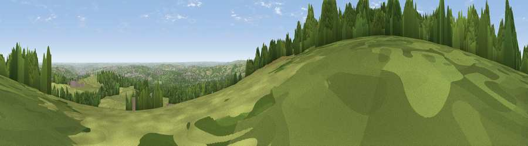

Viewpoint near Ringinglow
#7781 in England · top 5% of its area beats it · near RinginglowWhere it is
The exact computed spot (SK 28923 83132). Click the marker for map links.
The view, rendered

A 360° render of this exact spot computed from the terrain model, tree cover and land cover — summer colours, afternoon light, calibrated against photographs of famous viewpoints. Real trees, hedges and buildings will differ in detail.
The panorama
Grey silhouette: terrain skyline in each direction (720 bearings, Earth curvature and refraction included). Dashed green: skyline with trees (+15 m) and buildings (+8 m) as obstacles. Blue strip: how far the ground is visible on each bearing.
Where the view opens
Wedge length = distance to the farthest visible ground on that bearing (vegetation-aware). Rings at 10, 25 and 50 km.
What fills the view
49% grassland · 34% woodland · 12% built-up · 4% cropland
Angular shares of the visible panorama (visual magnitude), not map area. Landscape diversity 0.48 (0–1 Shannon).
Key numbers
More beautiful places nearby
The staircase of upgrades: each row has a higher view potential than everything closer. Driving times are estimates from straight-line distance, calibrated against real road routing — check an actual route before setting out.
| Place | Direction | Drive | Score |
|---|---|---|---|
| Viewpoint near Hathersage | W · 4 km | ~9 min | 70.9 |
| Viewpoint near Thornhill | WNW · 11 km | ~20 min | 74.1 |
| Viewpoint near Wharncliffe Side | N · 13 km | ~25 min | 75.2 |
| Tissington Hill | SSW · 33 km | ~51 min | 75.5 |
| Wild Bank | WNW · 33 km | ~51 min | 76.2 |
| Viewpoint near Carrbrook | WNW · 34 km | ~52 min | 77.1 |
| Viewpoint near Mow Cop | WSW · 50 km | ~71 min | 78.9 |
| Viewpoint near Mow Cop | WSW · 50 km | ~71 min | 80.2 |
53.34430, -1.56703 · source: osm viewpoint · position refined by local search. Computed location — check access rights before visiting.